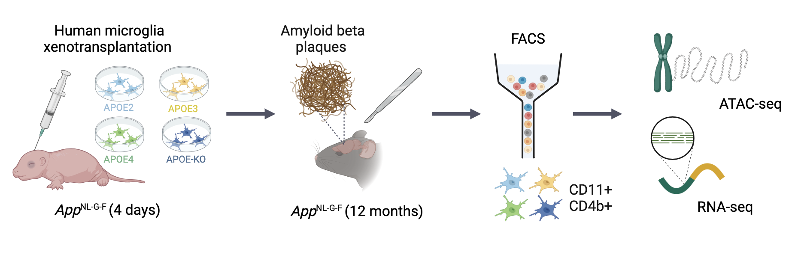
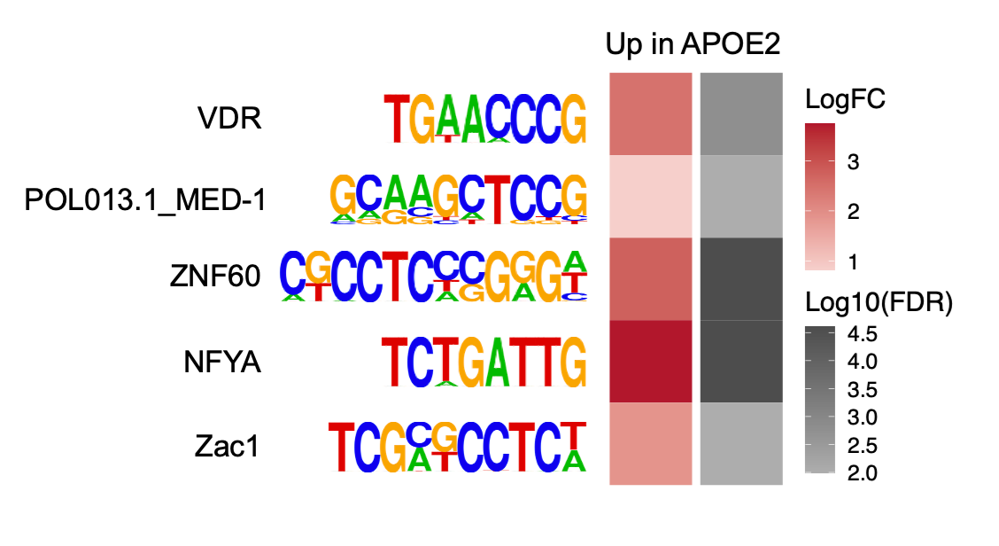
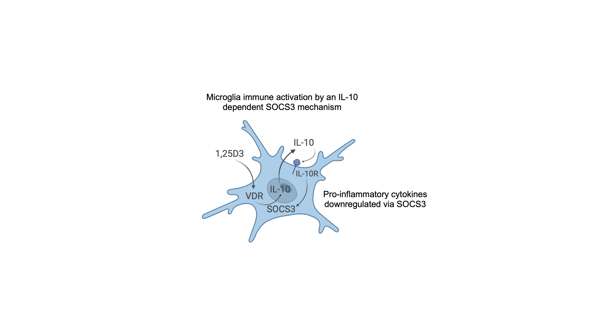

The APOE isoforms differentially shape the transcriptomic and epigenomic landscapes of human microglia in a xenotransplantation model of Alzheimer’s disease
This markdown contains all the code to generate the main and supplementary figures in:
Murphy, KB., Hu D., Wolfes, L., Mancuso, R., De Strooper, B., Marzi, SJ. The APOE isoforms differentially shape the transcriptomic and epigenomic landscapes of human microglia in a xenotransplantation model of Alzheimer’s disease.
Code
### Differential expression analysis using DeSeq2 #### Define samples and groups samples <-c(paste("E2-", 1:5, sep=""), paste("E3-", 2:5, sep=""), paste("E4-", 1:5, sep=""), paste("KO-", 1:5, sep=""))group <-c(rep("E2", times =5), rep("E3", times =4), rep("E4", times =5), rep("KO", times =5))colData <-data.frame(samples = samples, group = group)## Hashed out code is to read in the Salmon quant.sf files and create a DeSeqDataset object ### make tx2gene from gtf file # txdb <- TxDb.Hsapiens.UCSC.hg38.knownGene# key <- keys(txdb, keytype = "GENEID")# tx2gene <- select(txdb, keys = key, keytype = "GENEID", columns = "TXNAME")# tx2gene <- tx2gene[, c(2, 1)]# import salmon quant files # files <- file.path(rna_dir, "salmon", samples, "quant.sf")# txi <- tximport(files, type = "salmon", tx2gene = tx2gene)# make DeSeqDataset object # ddsTxi <- DESeqDataSetFromTximport(txi,# colData = colData,# design = ~ group) # Read in DESeqDataset object ddsTxi <-readRDS("data/APOE_microglia_RNAseq_DESeqDataset_obj.rds")# Remove samples with high APOE expression in the KOindices_to_remove <-which(ddsTxi$samples %in%c("KO-1", "KO-2"))ddsTxi_subset <- ddsTxi[, -indices_to_remove]# Run differential expression analysis dds <-DESeq(ddsTxi_subset) # Run contrastscontrasts <-list(c("group", "E2", "E3"),c("group", "E4", "E3"),c("group", "E4", "E2"),c("group", "KO", "E3")# Add more contrasts as needed)res <-lapply(contrasts, function(con) results(dds, contrast = con))# Get gene symbols corresponding to entrez idsensembl <-useEnsembl(biomart ="genes", dataset ="hsapiens_gene_ensembl")convertEntrezToGeneSymbol <-function(res) { res_df <-as.data.frame(res) entrez_ids <-rownames(res_df) gene_symbols <-getBM(attributes =c('hgnc_symbol', 'entrezgene_id'),values = entrez_ids,mart = ensembl ) res_df_with_symbols <-merge( gene_symbols, res_df, by.x ="entrezgene_id", by.y ="row.names" ) res_df_with_symbols <- res_df_with_symbols[order(res_df_with_symbols$padj), ]return(res_df_with_symbols)}res_annot <-lapply(res, convertEntrezToGeneSymbol)# Filter to remove genes with NA logFC and perform FDR correctionfilter_adjust <-function(x) { res_df <- x[complete.cases(x$log2FoldChange), ] res_df$fdr <-p.adjust(res_df$pvalue, method ="fdr") res_df$padj <-NULLreturn(res_df)}res_annot_filt <-lapply(res_annot, filter_adjust)# Get results df for each contrast# Define a function to process each datasetget_deg_res <-function(data) { data %>%na.omit() %>% dplyr::distinct(entrezgene_id, .keep_all =TRUE) %>%filter(complete.cases(log2FoldChange))}# Apply the function to each datasetE2vsE3_rna <-get_deg_res(res_annot_filt[[1]])E4vsE3_rna <-get_deg_res(res_annot_filt[[2]])E4vsE2_rna <-get_deg_res(res_annot_filt[[3]])KOvsE3_rna <-get_deg_res(res_annot_filt[[4]])E2vsE3_rna_sig <- E2vsE3_rna[E2vsE3_rna$fdr<0.05,]E4vsE3_rna_sig <- E4vsE3_rna[E4vsE3_rna$fdr<0.05,]E4vsE2_rna_sig <- E4vsE2_rna[E4vsE2_rna$fdr<0.05,]KOvsE3_rna_sig <- KOvsE3_rna[KOvsE3_rna$fdr<0.05,]
Code
### Differential chromatin accessibility analysis using DeSeq2 #### Read in ATAC-seq counts# Peaks were called using MACS3 with a p-value cut off of 0.01atac_counts <-read.csv("data/APOE_microglia_ATACseq_counts.csv")rownames(atac_counts) <- atac_counts$Peakatac_f_counts <- atac_counts[,-c(1:6)]# Remove KO samples with high APOE expressionatac_f2_counts <- atac_f_counts[, !names(atac_f_counts) %in%c("KO_1", "KO_2")]# Get peaksatac_peaks <- atac_counts[, c("Chr", "Start", "End", "Peak")]# Set up design matrix for differential accessibility analysisgroup <-factor(c(rep("E3", 5), rep("KO", 2), rep("E4", 4), rep("E2", 5)))design <-model.matrix(~0+ group)colnames(design) <-levels(group)# Keep peaks with counts that are meaningful for statistical analysiskeep <-filterByExpr(atac_f2_counts, design)atac_f3_counts <- atac_f2_counts[keep,]# DESeq2 analysismeta <-data.frame(samples =colnames(atac_f3_counts), group)atac_dds <-DESeqDataSetFromMatrix(atac_f3_counts, meta, ~group)atac_dds <-DESeq(atac_dds)# Function to generate differential accessibility resultsget_dar_res <-function(contrast) { dar <-as.data.frame(results(atac_dds, contrast = contrast)) dar$Peak <-row.names(dar) dar <-merge(atac_peaks, dar, by ="Peak") dar <- dar[order(dar$pvalue, decreasing =FALSE), ] dar$fdr <-p.adjust(dar$pvalue, method ="fdr") dar$diffAccessible <-"Not sig" dar$diffAccessible[dar$log2FoldChange >0& dar$fdr <0.05] <-"Up" dar$diffAccessible[dar$log2FoldChange <0& dar$fdr <0.05] <-"Down"return(dar)}# Generate DAR results for each contrastE2vsE3_dar <-get_dar_res(c("group", "E2", "E3"))E4vsE2_dar <-get_dar_res(c("group", "E4", "E2"))E4vsE3_dar <-get_dar_res(c("group", "E4", "E3"))KOvsE3_dar <-get_dar_res(c("group", "KO", "E3"))# Annotate peakstxdb <- TxDb.Hsapiens.UCSC.hg38.knownGenepeaks_annot <-suppressMessages(as.data.frame(annotatePeak(makeGRangesFromDataFrame(atac_peaks[, 1:3]), TxDb = txdb, tssRegion =c(-3000, 3000), annoDb ="org.Hs.eg.db")))peaks_annot$peak <-row.names(atac_peaks)# Function to merge DAR with annotation and add contrast informationannotate_dar <-function(dar, contrast_name) { dar_annot <-merge( dar, peaks_annot, by.x =c("Chr", "Start", "End", "Peak"), by.y =c("seqnames", "start", "end", "peak") ) dar_annot$contrast <- contrast_name dar_annot <- dar_annot[order(dar_annot$pvalue, decreasing =FALSE), ]return(dar_annot)}# Annotate DAR results for each contrastE2vsE3_atac_annot <-annotate_dar(E2vsE3_dar, "E2vsE3")E4vsE3_atac_annot <-annotate_dar(E4vsE3_dar, "E4vsE3")E4vsE2_atac_annot <-annotate_dar(E4vsE2_dar, "E4vsE2")KOvsE3_atac_annot <-annotate_dar(KOvsE3_dar, "KOvsE3")# Filter significant DAR resultsE2vsE3_atac_sig <- E2vsE3_atac_annot[E2vsE3_atac_annot$fdr <0.05,]E4vsE3_atac_sig <- E4vsE3_atac_annot[E4vsE3_atac_annot$fdr <0.05,]E4vsE2_atac_sig <- E4vsE2_atac_annot[E4vsE2_atac_annot$fdr <0.05,]KOvsE3_atac_sig <- KOvsE3_atac_annot[KOvsE3_atac_annot$fdr <0.05,]
Figure 1: Transcriptomic and epigenomic profiling of xenotransplanted microglia reveals changes to their regulation in Alzheimer’s disease across the different APOE isoforms.

Figure 1a) Experimental design for xenotransplantation of iPSC-derived human microglia into the brains of AppNL-G-F mice (APOE2 = 5, APOE3 = 5, E4 = 4, APOE-KO = 2) and high-quality transcriptomic data across 17 mice (APOE2 = 5, APOE4 = 4, APOE4 = 5, APOE-KO = 3), followed by transcriptomic and chromatin accessibility profiling at 12 months.
Figure 1d) Stacked barplot of the number of differentially expressed genes (DEGs; FDR < 0.05) identified through pairwise comparisons across the experimental groups.
Code
## Figure 1e: no of DARs with DEG overlap ## # Function to get data gene names annotated to significant peakscreate_gene_df <-function(sig_data, symbol_col, diff_col, contrast_col, assay_name) { gene_df <- sig_data[, c(symbol_col, diff_col, contrast_col)] gene_df$assay <- assay_namecolnames(gene_df) <-c("gene", "direction", "contrast", "assay")return(gene_df)}# Create ATAC-seq gene data framesE2vsE3_atac_genes <-create_gene_df(E2vsE3_atac_sig, "SYMBOL", "diffAccessible", "contrast", "ATAC-seq")E4vsE3_atac_genes <-create_gene_df(E4vsE3_atac_sig, "SYMBOL", "diffAccessible", "contrast", "ATAC-seq")E4vsE2_atac_genes <-create_gene_df(E4vsE2_atac_sig, "SYMBOL", "diffAccessible", "contrast", "ATAC-seq")KOvsE3_atac_genes <-create_gene_df(KOvsE3_atac_sig, "SYMBOL", "diffAccessible", "contrast", "ATAC-seq")# Combine ATAC-seq gene data framesatac_genes <-rbind(E2vsE3_atac_genes, E4vsE3_atac_genes, E4vsE2_atac_genes, KOvsE3_atac_genes)# Create RNA-seq gene data framesE2vsE3_rna_genes <-create_gene_df(comparisons[comparisons$fdr <0.05& comparisons$comparison =="E2vsE3",], "hgnc_symbol", "diffExpressed", "comparison", "RNA-seq")E4vsE3_rna_genes <-create_gene_df(comparisons[comparisons$fdr <0.05& comparisons$comparison =="E4vsE3",], "hgnc_symbol", "diffExpressed", "comparison", "RNA-seq")E4vsE2_rna_genes <-create_gene_df(comparisons[comparisons$fdr <0.05& comparisons$comparison =="E4vsE2",], "hgnc_symbol", "diffExpressed", "comparison", "RNA-seq")KOvsE3_rna_genes <-create_gene_df(comparisons[comparisons$fdr <0.05& comparisons$comparison =="KOvsE3",], "hgnc_symbol", "diffExpressed", "comparison", "RNA-seq")# Combine RNA-seq gene data framesrna_genes <-rbind(E2vsE3_rna_genes, E4vsE3_rna_genes, E4vsE2_rna_genes, KOvsE3_rna_genes)# Combine RNA-seq and ATAC-seq gene data framesrna_atac_genes <-rbind(atac_genes, rna_genes)rna_atac_genes$direction <-gsub("Upregulated", "Up", rna_atac_genes$direction)rna_atac_genes$direction <-gsub("Downregulated", "Down", rna_atac_genes$direction)# Summarise gene countsgene_counts <- rna_atac_genes %>%filter(gene !="") %>%group_by(contrast, assay) %>% dplyr::summarise(count =n(), .groups ='drop')# Count the number of overlapping genesoverlap_counts <- rna_atac_genes %>%filter(gene !="") %>%group_by(contrast, gene) %>% dplyr::summarise(count =n(), .groups ='drop') %>%filter(count >1) %>%group_by(contrast) %>% dplyr::summarise(overlap_count =n(), .groups ='drop')# Merge gene counts with overlap countsgene_counts <- dplyr::left_join(gene_counts, overlap_counts, by ="contrast")# Plot the resultsdars_plot <-ggplot(gene_counts[gene_counts$assay =="ATAC-seq", ], aes(x = contrast, y = count, fill = assay)) +geom_bar(stat ="identity", position ="dodge") +geom_bar(aes(y = overlap_count, fill ="Overlap"), stat ="identity", position ="dodge") +geom_text(aes(label =paste(overlap_count, "/", count)), position =position_dodge(width =0.9), vjust =-0.5, size =4.5) +labs(x ="", y ="Number of DARs", fill ="Assay") +ylim(0, 80) +scale_fill_manual(values =ghibli_palette("MarnieLight2", direction =-1), labels =c('ATAC only', 'ATAC and RNA'), name ="") +theme_bw() +theme(legend.text =element_text(size =20), text =element_text(size =20))plot(dars_plot)
Figure 1e) Stacked barplot of the number of differentially accessible regions (DARs) and how many of these overlap with the DEGs based on peak-to-gene annotation.
Figure 2: Microglia-expressing the different APOE isoforms exhibit widespread differences in gene regulation.
Code
## Figure 2s: E2vsE3 DEGs volcano plot ### set factor level comparisons$diffExpressed <-factor(comparisons$diffExpressed, levels=c("Up", "Down", "Not sig"))# fill in missing gene symbol for one of the top sig genescomparisons$hgnc_symbol[comparisons$entrezgene_id=="102724316"] <-"SVIL-AS1"# get top 20 genes for labelling top_genes <-head(comparisons[comparisons$comparison =="E2vsE3", ], 10)E2vsE3_volcano <-ggplot(comparisons[comparisons$comparison=="E2vsE3",], aes(x=log2FoldChange, y=-log10(fdr), colour=diffExpressed)) +geom_point(size=1) +xlim(-10,10) +scale_colour_manual(values=c("#92BBD9FF", "#92BBD9FF", "#C3DAEAFF")) +theme_classic() +ylab("-log10(FDR)") +guides(colour="none") +theme(text =element_text(size=16), plot.title =element_text(hjust =0.5)) +ggtitle("E2 vs E3") +geom_label_repel(data = top_genes, aes(label = hgnc_symbol), box.padding =0.5, colour="#506777FF", size=5) +geom_vline(xintercept =0, linetype ="dashed", color ="slategrey") +geom_hline(yintercept =-log10(0.05), linetype ="dashed", color ="slategrey")plot(E2vsE3_volcano)
Figure 2a) Differentially expressed genes in APOE2 vs APOE3-expressing microglia.
Figure 2c) Differentially expressed genes in APOE4 vs APOE2-expressing microglia.
Code
## Figure 2d: RRHO E2 and KO ##set.seed(1234)# Set rrho p-value for KO vs E3KOvsE3_rrho <- KOvsE3_rna[, c("entrezgene_id", "pvalue", "log2FoldChange")]KOvsE3_rrho$rrho_pvalue <-0up_indices <- KOvsE3_rrho$log2FoldChange >0down_indices <- KOvsE3_rrho$log2FoldChange <0KOvsE3_rrho$rrho_pvalue[up_indices] <--log10(KOvsE3_rrho$pvalue[up_indices]) * KOvsE3_rrho$log2FoldChange[up_indices]KOvsE3_rrho$rrho_pvalue[down_indices] <--log10(KOvsE3_rrho$pvalue[down_indices]) * KOvsE3_rrho$log2FoldChange[down_indices]KOvsE3_rrho <- KOvsE3_rrho[,c("entrezgene_id", "rrho_pvalue")]# Set rrho p-value for E2 vs E3E2vsE3_rrho <- E2vsE3_rna[, c("entrezgene_id", "pvalue", "log2FoldChange")]E2vsE3_rrho$rrho_pvalue <-0up_indices <- E2vsE3_rrho$log2FoldChange >0down_indices <- E2vsE3_rrho$log2FoldChange <0E2vsE3_rrho$rrho_pvalue[up_indices] <--log10(E2vsE3_rrho$pvalue[up_indices]) * E2vsE3_rrho$log2FoldChange[up_indices]E2vsE3_rrho$rrho_pvalue[down_indices] <--log10(E2vsE3_rrho$pvalue[down_indices]) * E2vsE3_rrho$log2FoldChange[down_indices]E2vsE3_rrho <- E2vsE3_rrho[,c("entrezgene_id", "rrho_pvalue")]E2_KO_rrho <-RRHO2_initialize(na.omit(E2vsE3_rrho), na.omit(KOvsE3_rrho), labels =c("E2", "KO"), log10.ind=TRUE)E2_KO_heatmap <-RRHO2_heatmap(E2_KO_rrho, colorGradient =wes_palette("Zissou1", 100, type ="continuous"), maximum =350)
Figure 2d) Rank-Rank Hypergeometric Overlap (RRHO) heatmap comparing expression signatures between APOE-KO vs APOE3 and APOE2 vs APOE3.
Code
## Figure 2e: RRHO E4 and KO heatmap ### Set rrho p-value for E4 vs E3E4vsE3_rrho <- E4vsE3_rna[, c("entrezgene_id", "pvalue", "log2FoldChange")]E4vsE3_rrho$rrho_pvalue <-0up_indices <- E4vsE3_rrho$log2FoldChange >0down_indices <- E4vsE3_rrho$log2FoldChange <0E4vsE3_rrho$rrho_pvalue[up_indices] <--log10(E4vsE3_rrho$pvalue[up_indices]) * E4vsE3_rrho$log2FoldChange[up_indices]E4vsE3_rrho$rrho_pvalue[down_indices] <--log10(E4vsE3_rrho$pvalue[down_indices]) * E4vsE3_rrho$log2FoldChange[down_indices]E4vsE3_rrho <- E4vsE3_rrho[,c("entrezgene_id", "rrho_pvalue")]E4_KO_rrho <-RRHO2_initialize(na.omit(E4vsE3_rrho), na.omit(KOvsE3_rrho), labels =c("E4", "KO"), log10.ind=TRUE)E4_KO_heatmap <-RRHO2_heatmap(E4_KO_rrho, colorGradient =wes_palette("Zissou1", 100, type ="continuous"), maximum =350)
Figure 2e) Rank-Rank Hypergeometric Overlap (RRHO) heatmap comparing expression signatures between APOE-KO vs APOE3 and APOE4 vs APOE3.
Code
E4_uu <-data.frame(gene=E4_KO_rrho[["genelist_uu"]][["gene_list_overlap_uu"]])E4_uu$direction <-"E4_uu"E4_uu$genotype <-"E4"E4_uu <-merge(E4_uu, E4vsE3_rna, by.x="gene", by.y="entrezgene_id")names(E4_uu) <-gsub("log2FoldChange", "log2FoldChange_E4", names(E4_uu))E2_uu <-data.frame(gene=E2_KO_rrho[["genelist_uu"]][["gene_list_overlap_uu"]])E2_uu$direction <-"E2_uu"E2_uu$genotype <-"E2"E2_uu <-merge(E2_uu, E2vsE3_rna, by.x="gene", by.y="entrezgene_id")names(E2_uu) <-gsub("log2FoldChange", "log2FoldChange_E2", names(E2_uu))E4_dd <-data.frame(gene=E4_KO_rrho[["genelist_dd"]][["gene_list_overlap_dd"]])E4_dd$direction <-"E4_dd"E4_dd$genotype <-"E4"E4_dd <-merge(E4_dd, E4vsE3_rna, by.x="gene", by.y="entrezgene_id")names(E4_dd) <-gsub("log2FoldChange", "log2FoldChange_E4", names(E4_dd))E2_dd <-data.frame(gene=E2_KO_rrho[["genelist_dd"]][["gene_list_overlap_dd"]])E2_dd$direction <-"E2_dd"E2_dd$genotype <-"E2"E2_dd <-merge(E2_dd, E2vsE3_rna, by.x="gene", by.y="entrezgene_id")names(E2_dd) <-gsub("log2FoldChange", "log2FoldChange_E2", names(E2_dd))# get genes which are shared across the comparisons uu <-merge(E2_uu, E4_uu, by="gene")dd <-merge(E2_dd, E4_dd, by="gene")KO_overlap <-rbind(uu, dd)KO_overlap$Significant <-"Not significant"KO_overlap$Significant[KO_overlap$fdr.x<0.05] <-"FDR < 0.05 in APOE2"KO_overlap$Significant[KO_overlap$fdr.y<0.05] <-"FDR < 0.05 in APOE4"KO_overlap$Significant[KO_overlap$fdr.x<0.05& KO_overlap$fdr.y <0.05] <-"FDR < 0.05 in both"ggplot(KO_overlap, aes(log2FoldChange_E2, log2FoldChange_E4, colour=Significant)) +geom_point(size=1) +xlab("logFC of genes with similar expression profiles across \n APOE2 vs APOE3 and APOE-KO vs APOE3") +ylab("logFC of genes with similar expression profiles across \n APOE4 vs APOE3 and APOE-KO vs APOE3") +theme_classic() +ylim(-8,6) +xlim(-8,6) +scale_colour_manual(values=c("#DCCA2CFF", "#92BBD9FF", "peru", "moccasin")) +theme(text =element_text(size=14)) +geom_vline(xintercept=0, linetype="dashed", color="darkgrey") +geom_hline(yintercept=0, linetype="dashed", color="darkgrey")
Code
## Figure 2f: MAGMA gene set analysis with AD GWAS ##magma_res <-read.csv("data/MAGMA_DEGs_AD_GWAS_res.csv")magma_res$VARIABLE <-factor(magma_res$VARIABLE, levels=c("Up in E2vsE3", "Down in E2vsE3", "Up in E4vsE3", "Down in E4vsE3", "Up in E4vsE2", "Down in E4vsE2", "Up in KOvsE3", "Down in KOvsE3"))magma_plot <-ggplot(magma_res, aes(x=-log10(fdr), y=VARIABLE, fill=VARIABLE)) +geom_col(colour="black") +theme_bw() +xlab("-log10(FDR)") +ylab("DEGs") +theme(text =element_text(size=14)) +theme(legend.position ="none", plot.title =element_text(size =14, hjust=0.5)) +geom_vline(xintercept=-log10(0.05), linetype='dashed', col ='slategrey') +ggtitle("MAGMA gene set analysis using AD GWAS") +facet_wrap(~GWAS) +scale_y_discrete(limits=rev) +scale_fill_manual(values =c("#C3DAEAFF", "#92BBD9FF", "#ECE28BFF", "#DCCA2CFF", "#B1D5BBFF", "#6FB382FF", "#9DAFC3FF", "#4D6D93FF"))plot(magma_plot)
Figure 2g) MAGMA gene set analysis using the differentially expressed genes across the APOE groups with three independent AD GWAS.
Figure 3: Differentially expressed genes exhibit differential chromatin accessibility in their vicinity.
Figure 3c) Boxplot of expression profiles of CHCHD2 shows reduced expression in the APOE4 and the APOE-KO microglia.
Code
## Figure 3d: chromatin accessibility around CHCHD2 ##start <- E4vsE2_atac_annot$geneStart[E4vsE2_atac_annot$SYMBOL=="CHCHD2"][1] -3000end <- E4vsE2_atac_annot$geneEnd[E4vsE2_atac_annot$SYMBOL=="CHCHD2"][1] +3000# plot data tracks track_list <-c(KO ="data/KO-1.bw",E4 ="data/E4-1.bw", E3 ="data/E3-1.bw", E2 ="data/E2-1.bw")chchd2_region <-toGRanges(data.frame(chr="chr7", start=start, end=end))# set plotting parameterspp <-getDefaultPlotParams(plot.type=1)pp$leftmargin <-0.15pp$topmargin <-15pp$bottommargin <-15pp$ideogramheight <-5pp$data1inmargin <-10kp <-plotKaryotype(zoom = chchd2_region, cex=1.7, plot.params = pp)kpAddBaseNumbers(kp, tick.dist =3000, minor.tick.dist =1500,add.units =TRUE, cex=1.5, digits =6)chchd2_data <-makeGenesDataFromTxDb(TxDb.Hsapiens.UCSC.hg38.knownGene,karyoplot=kp,plot.transcripts =TRUE, plot.transcripts.structure =TRUE)chchd2_data$genes$name <-"CHCHD2"# KObigwig.file <- track_list[["KO"]]track_position =1track_colour ="#4D6D93FF"# Adjusting the margin for trackstrack_margin <-0.1# Autotrack for genesgenes_track_at <-autotrack(1, 1, r0=0, r1=track_margin)# Autotrack for the current trackat <-autotrack(track_position, length(track_list), r0=genes_track_at$r1 + track_margin, margin =0.2)# Plotting geneskp <-kpPlotGenes(kp, data=chchd2_data, r0=genes_track_at$r0, r1=genes_track_at$r1, gene.name.cex=2)# Plotting the current trackkp <-kpPlotBigWig(kp, data=bigwig.file, ymax="visible.region", r0=at$r0, r1=0.20466, col = track_colour)# Adjusting the y-axis limits and adding labelscomputed.ymax <-31kpAxis(kp, ymin=0, ymax=computed.ymax, numticks =2, r0=at$r0, r1=at$r1, cex =1.5)kpAddLabels(kp, labels =names(track_list)[1], r0=at$r0, r1=at$r1, cex=2, label.margin =0.035, col = track_colour)# E4bigwig.file <- track_list[["E4"]]track_position =2track_colour ="#6FB382FF"# Adjusting the margin for trackstrack_margin <-0.1# Autotrack for genesgenes_track_at <-autotrack(1, 1, r0=0, r1=track_margin)# Autotrack for the current trackat <-autotrack(track_position, length(track_list), r0=genes_track_at$r1 + track_margin, margin =0.2)# Plotting geneskp <-kpPlotGenes(kp, data=chchd2_data, r0=genes_track_at$r0, r1=genes_track_at$r1, gene.name.cex=2)# Plotting the current trackkp <-kpPlotBigWig(kp, data=bigwig.file, ymax="visible.region", r0=at$r0, r1=0.41718, col = track_colour)# Adjusting the y-axis limits and adding labelscomputed.ymax <-31kpAxis(kp, ymin=0, ymax=computed.ymax, numticks =2, r0=at$r0, r1=at$r1, cex =1.5)kpAddLabels(kp, labels =names(track_list)[2], r0=at$r0, r1=at$r1, cex=2, label.margin =0.035, col = track_colour)# E3bigwig.file <- track_list[["E3"]]track_position =3track_colour ="#DCCA2CFF"# Adjusting the margin for trackstrack_margin <-0.1# Autotrack for genesgenes_track_at <-autotrack(1, 1, r0=0, r1=track_margin)# Autotrack for the current trackat <-autotrack(track_position, length(track_list), r0=genes_track_at$r1 + track_margin, margin =0.2)# Plotting geneskp <-kpPlotGenes(kp, data=chchd2_data, r0=genes_track_at$r0, r1=genes_track_at$r1, gene.name.cex=2)# Plotting the current trackkp <-kpPlotBigWig(kp, data=bigwig.file, ymax="visible.region", r0=at$r0, r1= at$r1, col = track_colour)# Adjusting the y-axis limits and adding labelscomputed.ymax <-31kpAxis(kp, ymin=0, ymax=computed.ymax, numticks =2, r0=at$r0, r1=at$r1, cex =1.5)kpAddLabels(kp, labels =names(track_list)[3], r0=at$r0, r1=at$r1, cex=2, label.margin =0.035, col = track_colour)# E2bigwig.file <- track_list[["E2"]]track_position =4track_colour ="#92BBD9FF"# Adjusting the margin for trackstrack_margin <-0.1# Autotrack for genesgenes_track_at <-autotrack(1, 1, r0=0, r1=track_margin)# Autotrack for the current trackat <-autotrack(track_position, length(track_list), r0=genes_track_at$r1 + track_margin, margin =0.2)# Plotting geneskp <-kpPlotGenes(kp, data=chchd2_data, r0=genes_track_at$r0, r1=genes_track_at$r1, gene.name.cex=2)# Plotting the current trackkp <-kpPlotBigWig(kp, data=bigwig.file, ymax="visible.region", r0=at$r0, r1=0.91306, col = track_colour)# Adjusting the y-axis limits and adding labelscomputed.ymax <-31kpAxis(kp, ymin=0, ymax=computed.ymax, numticks =2, r0=at$r0, r1=at$r1, cex =1.5)kpAddLabels(kp, labels =names(track_list)[4], r0=at$r0, r1=at$r1, cex=2, label.margin =0.035, col = track_colour)
Figure 3d) Genome tracks of chromatin accessibility signals around the CHCHD2 locus show a loss of the open chromatin peak at the CHCHD2 promoter in APOE4 and APOE-KO microglia.
Figure 3e) s-LDSC analysis using all open chromatin regions from the xenotransplanted human microglia with GWAS summary statistics for AD, ALS, and ASD shows a microglia-specific enrichment for AD.
Figure 4: Pro-inflammatory cytokines are upregulated in APOE4-expressing microglia.
Code
## Figure 4a: Microglia cluster heatmap ## sheet_names <-c("HM", "tCRM", "CRM-1", "CRM-2", "RM", "DAM", "HLA", "IRM")microglial_states <-lapply(sheet_names, function(sheet_name) {read_excel("data/scRNAseq_microglia_states_Mancuso2024.xlsx", sheet = sheet_name)})# get top 100 upregulated genes in each microglia clustermicroglial_states_top100 <-lapply(microglial_states, function(df) { df %>%filter(avg_log2FC >0) %>%arrange(p_val_adj) %>%head(100)})# function to run hypergeometric test using DEGs and top 100 genes from microglia scRNA-seq clustersrun_hypergeo_test <-function(df, enrichment_data_frames, comparison) { results_df <-data.frame()# Filter by fdr < 0.05 filtered_df <- df[df$fdr <0.05,] filtered_df <- filtered_df[complete.cases(filtered_df$baseMean), ]# Subset rows with log2FoldChange > 0 upregulated <- filtered_df[filtered_df$log2FoldChange >0,]# Subset rows with log2FoldChange < 0 downregulated <- filtered_df[filtered_df$log2FoldChange <0,]# Now, check for enrichment in each data frame in the listfor (enrichment_df in enrichment_data_frames) { total_genes <-nrow(df) upregulated_ol <-intersect(upregulated$hgnc_symbol, enrichment_df$gene) GeneRatio_upregulated <-length(upregulated_ol)/nrow(enrichment_df) Count_upregulated <-length(upregulated_ol) downregulated_ol <-intersect(downregulated$hgnc_symbol, enrichment_df$gene) GeneRatio_downregulated <-length(downregulated_ol)/nrow(enrichment_df) Count_downregulated <-length(downregulated_ol)# Check if the overlap is greater than 0 for upregulated genesif (length(upregulated_ol) >1) { p_value_upregulated <-phyper((length(upregulated_ol) -1), nrow(enrichment_df), total_genes -nrow(enrichment_df), nrow(upregulated), lower.tail =FALSE) } else { p_value_upregulated <-1 }# Check if the overlap is greater than 0 for downregulated genesif (length(downregulated_ol) >1) { p_value_downregulated <-phyper((length(downregulated_ol) -1), nrow(enrichment_df), total_genes -nrow(enrichment_df), nrow(downregulated), lower.tail =FALSE) } else { p_value_downregulated <-1 }# Create a data frame for the results and append it to the main results data frame result_upregulated <-data.frame(Comparison = comparison, Direction ="Upregulated", p = p_value_upregulated, Cluster =unique(enrichment_df$cluster),GeneRatio = GeneRatio_upregulated, Count = Count_upregulated) result_downregulated <-data.frame(Comparison = comparison, Direction ="Downregulated", p = p_value_downregulated, Cluster =unique(enrichment_df$cluster),GeneRatio = GeneRatio_downregulated, Count = Count_downregulated) results_df <-rbind(results_df, result_upregulated, result_downregulated) }# Return the results if neededreturn(results_df)}# Apply the function to each contrastE2vsE3_mglcluster_ol <-run_hypergeo_test(E2vsE3_rna, microglial_states_top100, "E2vsE3")E4vsE3_mglcluster_ol <-run_hypergeo_test(E4vsE3_rna, microglial_states_top100, "E4vsE3")E4vsE2_mglcluster_ol <-run_hypergeo_test(E4vsE2_rna, microglial_states_top100, "E4vsE2")KOvsE3_mglcluster_ol <-run_hypergeo_test(KOvsE3_rna, microglial_states_top100, "KOvsE3")# get all results and perform multiple testing correctionall_mglcluster_ol <-rbind(E2vsE3_mglcluster_ol, E4vsE3_mglcluster_ol, E4vsE2_mglcluster_ol, KOvsE3_mglcluster_ol)all_mglcluster_ol$bonf <-p.adjust(all_mglcluster_ol$p, method="bonferroni")all_mglcluster_ol$label <-paste(all_mglcluster_ol$Direction, "in", all_mglcluster_ol$Comparison)all_mglcluster_ol$p_scientific <-as.numeric(format(all_mglcluster_ol$bonf, scientific =TRUE))all_mglcluster_ol$signif[all_mglcluster_ol$bonf <0.05] <-"*"all_mglcluster_ol$signif[all_mglcluster_ol$bonf <0.01] <-"**"all_mglcluster_ol$signif[all_mglcluster_ol$bonf <0.001] <-"***"all_mglcluster_ol$signif[all_mglcluster_ol$bonf <0.0001] <-"****"ggplot(all_mglcluster_ol, aes(x = Comparison, y = Cluster)) +geom_tile(aes(fill = GeneRatio), color ="black") +geom_text(aes(label =ifelse(bonf <0.05, sprintf("%.1e", p_scientific), "")), vjust =1.5) +scale_fill_gradient(low ="white", high ="#B2182B") +theme_minimal() +facet_wrap(~Direction) +xlab("") +ylab("Microglia cluster") +theme(text =element_text(size =16))
Figure 4a) Heatmap showing enrichment of genes differentially expressed across the APOE groups amongst microglia clusters defined by scRNA-seq.
Code
## Figure 4b: GO enrichment using E4 genes overlapping DAM ## # get dam microglia cluster dam <- microglial_states_top100[[6]]upregulated_ol <-intersect(E4vsE2_rna_sig$hgnc_symbol[E4vsE2_rna_sig$log2FoldChange>0], dam$gene)downregulated_ol <-intersect(E4vsE2_rna_sig$hgnc_symbol[E4vsE2_rna_sig$log2FoldChange<0], dam$gene)E4vsE2_down_dam_bp <-as.data.frame(enrichGO(downregulated_ol,OrgDb = org.Hs.eg.db, keyType ="SYMBOL",ont ="BP", pvalueCutoff =0.05, pAdjustMethod ="fdr",universe =unique(E4vsE2_rna$hgnc_symbol),qvalueCutoff =0.05,minGSSize =10,maxGSSize =650, readable =FALSE, pool =FALSE))E4vsE2_down_dam_bp$GeneRatio_calc <- E4vsE2_down_dam_bp$Count/length(downregulated_ol)# Dotplot of GO BP processes enriched for genes down in E4 and up in DAMggplot(E4vsE2_down_dam_bp[1:20,], aes(x=GeneRatio_calc, y=reorder(Description, GeneRatio_calc), colour = p.adjust, size = Count)) +geom_point() +xlab("Gene ratio") +ylab("Biological process") +theme_bw() +ggtitle("Genes down in E4 enriched in DAM") +scale_colour_gradient(low ="#B1D5BBFF", high ="#6FB382FF") +theme(text =element_text(size=18), plot.title =element_text(size =18, hjust=0.5)) +guides(size=guide_legend(title="Gene count"), colour =guide_legend(title ="FDR"))
Figure 4b) Dotplot of pathway enrichment analysis using genes downregulated in APOE4 microglia that are enriched in the DAM cluster.
Figure 4f) Boxplot of expression profiles of CXCL16.
Code
dds_norm <-vst(ddsTxi_subset)dds_norm_t <-assay(dds_norm) %>%t() # Pick soft threshold parametersft <-pickSoftThreshold(dds_norm_t,dataIsExpr =TRUE,corFnc = cor,networkType ="signed")sft_df <-data.frame(sft$fitIndices) %>% dplyr::mutate(model_fit =-sign(slope) * SFT.R.sq)sft_threshold <-ggplot(sft_df, aes(x = Power, y = model_fit, label = Power)) +geom_point() +geom_text(nudge_y =0.1) +geom_hline(yintercept =0.80, col ="red") +ylim(c(min(sft_df$model_fit), 1.05)) +xlab("Soft Threshold (power)") +ylab("Scale Free Topology Model Fit, signed R^2") +ggtitle("Scale independence") +theme_classic()# Run WGCNAnetwork <-blockwiseModules(dds_norm_t, power =20,TOMType ="signed", minModuleSize =30, mergeCutHeight =0.25,numericLabels =TRUE, saveTOMs =TRUE, saveTOMFileBase ="TOM", randomSeed =123)# Identify modules and assign colorsmodule_colours <-labels2colors(network$colors)# Extract module membership and module eigengene valuesmodule_membership <-moduleEigengenes(dds_norm_t, network$colors)module_eigengenes <- module_membership$eigengenes# Run differential expression analysis samples <-c(paste("E2-", 1:5, sep=""), paste("E3-", 2:5, sep=""), paste("E4-", 1:5, sep=""), paste("KO-", 3:5, sep=""))group <-c(rep("E2", times =5), rep("E3", times =4), rep("E4", times =5), rep("KO", times =3))colData <-data.frame(samples=samples, group=group)design <-model.matrix(~ colData$group)colnames(design) <-c("E2", "E3", "E4", "KO")fit <- limma::lmFit(t(module_eigengenes), design = design)contrasts <- limma::makeContrasts(E4vsE3 = E4 - E3,E4vsE2 = E4 - E2,E2vsE3 = E2 - E3, KOvsE3 = KO - E3, levels =colnames(fit$coefficients))# Apply contrasts to the linear model fitcontrasts_fit <- limma::contrasts.fit(fit, contrasts)contrasts_fit <- limma::eBayes(contrasts_fit)E4vsE3_limma <- limma::topTable(contrasts_fit, coef ="E4vsE3", number =Inf)E4vsE2_limma <- limma::topTable(contrasts_fit, coef ="E4vsE2", number =Inf)E2vsE3_limma <- limma::topTable(contrasts_fit, coef ="E2vsE3", number =Inf)KOvsE3_limma <- limma::topTable(contrasts_fit, coef ="KOvsE3", number =Inf)# enrichment analysis gene_module_key <- tibble::enframe(network$colors, name ="gene", value ="module") %>% dplyr::mutate(module =paste0("ME", module))# get gene ids gene_symbols <-getBM(attributes =c('hgnc_symbol', 'entrezgene_id'),values = gene_module_key$gene,mart = ensembl )gene_module_key <-merge(gene_module_key, gene_symbols, by.x="gene", by.y="entrezgene_id")
Figure 5: Gene networks upregulated in APOE2 microglia are associated with cellular migration and immune responses.
Code
# Proliferation and migration module module_eigengenes_exp <-cbind(module_eigengenes, colData)module_eigengenes_exp$title <-"Proliferation and migration module"ggplot(module_eigengenes_exp, aes(x = group, y = ME1, fill = group)) +geom_boxplot(width =0.3, outlier.shape =NA) +xlab("") + ggforce::geom_sina(maxwidth =0.3) +ylab("Module eigengenes") +theme_bw() +facet_grid(. ~ title) +theme(text =element_text(size=18)) +theme(strip.background =element_rect(fill ="#92BBD9FF")) +guides(fill="none") +scale_fill_manual(values =ghibli_palette("YesterdayMedium", direction =-1))
Figure 5a) Barplot of eigengene expression of the WGCNA module associated with proliferation and migration.
Code
# Run pathway enrichment analysis all_GO_res <-list()# List of APOE contrast data frames with nameslimma_dfs <-list(E2vsE3 = E2vsE3_limma, E4vsE3 = E4vsE3_limma, E4vsE2 = E4vsE2_limma, KOvsE3 = KOvsE3_limma)# Loop through each data framefor (contrast innames(limma_dfs)) {print(contrast) current_df <- limma_dfs[[contrast]] subset_df <- current_df %>%filter(adj.P.Val <0.05) subset_df$direction <-ifelse(subset_df$logFC >0, "Up", "Down") module_names <-rownames(subset_df)# Iterate through each module namefor (module_name in module_names) {# Filter gene_module_key for the specific module ME <- gene_module_key %>%filter(module == module_name)print(module_name)# Perform pathway enrichment analysis GO_BP <-enrichGO(ME$hgnc_symbol,OrgDb = org.Hs.eg.db, keyType ="SYMBOL",ont ="BP", pvalueCutoff =0.05, pAdjustMethod ="fdr",universe =unique(gene_module_key$SYMBOL),qvalueCutoff =0.05,minGSSize =10, maxGSSize =600, readable =FALSE, pool =FALSE)# Check if there are resultsif (nrow(GO_BP) >0) {# Add information to the result list all_GO_res[[contrast]][[module_name]]$GO_Biological_Process <-as.data.frame(GO_BP) all_GO_res[[contrast]][[module_name]]$GO_Biological_Process$direction <- subset_df$direction[rownames(subset_df) == module_name] all_GO_res[[contrast]][[module_name]]$GO_Biological_Process$contrast <-paste0(all_GO_res[[contrast]][[module_name]]$GO_Biological_Process$direction, " in ", contrast) all_GO_res[[contrast]][[module_name]]$GO_Biological_Process$category <-"Biological process" all_GO_res[[contrast]][[module_name]]$GO_Biological_Process$module <- module_name } }}all_GO_res_df <-do.call(rbind, lapply(unlist(unlist(all_GO_res, recursive =FALSE), recursive =FALSE), as.data.frame))all_GO_res_df$module_name[all_GO_res_df$module =="ME1"] <-"Proliferation and migration module"all_GO_res_df$module_name[all_GO_res_df$module =="ME22"] <-"Immune response module"# calculate gene ratio all_GO_res_df <- all_GO_res_df %>% dplyr::rowwise() %>%mutate(GeneRatio_calc =as.numeric(strsplit(GeneRatio, "/")[[1]])[1] /as.numeric(strsplit(GeneRatio, "/")[[1]])[2])# get top 30 pathways ME1_module_top30 <-head(all_GO_res_df[order(all_GO_res_df$GeneRatio_calc, decreasing =TRUE) & all_GO_res_df$module =="ME1", ], 30)# create colours vector for y-axis labels associated with proliferation and migrationcolours_vector <-ifelse(grepl("migration|proliferation|chemokine|motility|locomotion", ME1_module_top30$Description),"#92BBD9FF","black")colours_vector <- colours_vector[order(ME1_module_top30$GeneRatio_calc, ME1_module_top30$Description)]# Plot top 30 GO BP enrichments for the ME1 (proliferation and migration) moduleggplot(ME1_module_top30, aes(x=GeneRatio_calc, y=reorder(Description, GeneRatio_calc), colour=p.adjust, size=Count, shape=category)) +geom_point() +scale_y_discrete() + DOSE::theme_dose() +scale_colour_gradient(low ="#C3DAEAFF", high ="#92BBD9FF") +# Use the colors you preferxlab("Gene ratio") +ylab("GO Biological Process") +scale_size(range=c(3,7)) +guides(size=guide_legend(title="Gene count"), shape="none") +theme(axis.text.x =element_text(angle=45, hjust=1, vjust=1), plot.title =element_text(hjust =0.5, size=18),axis.text.y =element_text(colour = colours_vector),axis.title.y =element_text(size=20),text=element_text(size=20)) +facet_wrap(~module_name) +ggtitle("Up in APOE2")
Figure 5b) GO biological processes enriched for genes within the WGCNA module associated with proliferation and migration that is upregulated in APOE2 microglia.
Figure 5c) Barplot of eigengene expression of the WGCNA module associated with immune responses.
Code
# get top 30 pathways ME22_module_top30 <-head(all_GO_res_df[order(all_GO_res_df$GeneRatio_calc, decreasing =TRUE) & all_GO_res_df$module =="ME22", ], 30)# create colours vector for y-axis labels associated with proliferation and migrationcolours_vector <-ifelse(grepl("immune|immunity|wounding|complement|wound", ME22_module_top30$Description),"#92BBD9FF","black")colours_vector <- colours_vector[order(ME22_module_top30$GeneRatio_calc, ME22_module_top30$Description)]# plot top 30 GO BP enrichments for M22 (immune response) module ggplot(ME22_module_top30, aes(x=GeneRatio_calc, y=reorder(Description, GeneRatio_calc), colour=p.adjust, size=Count, shape=category)) +geom_point() +scale_y_discrete() + DOSE::theme_dose() +scale_colour_gradient(low ="#C3DAEAFF", high ="#92BBD9FF") +# Use the colors you preferxlab("Gene ratio") +ylab("GO Biological Process") +scale_size(range=c(3,7)) +guides(size=guide_legend(title="Gene count"), shape="none") +theme(axis.text.x =element_text(angle=45, hjust=1, vjust=1), plot.title =element_text(hjust =0.5, size=20),axis.text.y =element_text(colour = colours_vector),axis.title.y =element_text(size=20),text=element_text(size=18)) +ggtitle("Up in APOE2") +scale_y_discrete(labels =c("adaptive immune response based on somatic recombination of immune receptors built from immunoglobulin superfamily domains"="adaptive immune response based on somatic recombination of \n immune receptors built from immunoglobulin superfamily domains")) +facet_wrap(~module_name)
Figure 5d) GO biological processes enriched for genes within the WGCNA module associated with immune responses, which is upregulated in APOE2 microglia.
Figure 6: Regions with increased chromatin accessibility in APOE2 microglia are enriched for the binding of vitamin D receptor.
Code
## Figure 6a: motif enrichment heatmap ## # Read in motif enrichment results for top 100 upregulated peaks in E2 vs E3homer_res <-read.csv("data/HOMER_motif_enrich_E2vsE3_top100_res.csv")homer_res$Percentage.of.Targets <-gsub("%", "", homer_res$Percentage.of.Targets)homer_res$Percentage.of.Background <-gsub("%", "", homer_res$Percentage.of.Background)# delete rows where percentage in background is 0 homer_res <- homer_res[as.numeric(homer_res$Percentage.of.Background) !=0.00, ]# calculate log2enr homer_res$logFC <-log2(as.numeric(homer_res$Percentage.of.Targets) /as.numeric(homer_res$Percentage.of.Background))# multiple testing correction homer_res$fdr <-p.adjust(homer_res$P.value, method="fdr")homer_res$log10fdr <--log10(homer_res$fdr)homer_res$motif_name <-sub("^([^\\(/]+).*", "\\1", homer_res$Best.Match.Details)plot_fc <-ggplot(homer_res, aes(x =1, y = motif_name, fill = logFC)) +geom_tile() +theme_void() +scale_fill_gradient2(low ="white", high ="#B2182B") +labs(title ="", fill ="LogFC") +coord_fixed() +theme(legend.position ="none", text =element_text(size=16))plot_fdr <-ggplot(homer_res, aes(x =1, y = motif_name, fill = log10fdr)) +geom_tile() +scale_fill_gradient2(low ="white", high ="#4D4D4D") +theme_void() +labs(title ="", fill ="Log10(FDR)") +coord_fixed() +theme(legend.position ="none", text =element_text(size=16))motif_heatmaps <- plot_fc + plot_fdr +plot_layout(guides ="collect") &theme(legend.position ="right")

Figure 6a) Heatmap showing enrichment of motifs in regions with increased chromatin accessibility in APOE2 microglia.
Figure 6c) Boxplot of gene expression profiles of IL-10RA.

Figure 6d) Graphic adapted from Boontanrart et al. (2016), showing a mechanism of anti-inflammatory microglia activation mediated through vitamin D and IL-10 signalling.
Code
vsd <-vst(dds, blind =FALSE)colnames(vsd) <- vsd$samplespca <-prcomp(t(assay(vsd)))pca_data <-data.frame(pca$x)pca_data$group <- vsd$grouppca_plot_data <-plotPCA(vsd, intgroup ="group", returnData =TRUE)apoe_palette <-ghibli_palette("YesterdayMedium", direction =-1)# PCA plotrna_pca <-ggplot(pca_plot_data, aes(x = PC1, y = PC2, color = group)) +geom_point(size =3) +scale_colour_manual(values = apoe_palette) +labs(title ="Gene expression", x ="PC1", y ="PC2") +theme_classic() +theme(legend.title =element_blank(), plot.title =element_text(hjust =0.5), panel.border =element_rect(color ="slategrey", fill =NA, size =1), text =element_text(size =14) ) +geom_hline(yintercept =0, colour ="slategrey") +geom_vline(xintercept =0, colour ="slategrey")# outliers: check which samples are 3 standard deviations from the mean find_group_outliers <-function(df) { df %>%group_by(group) %>%summarise(outliers_PC1 =list(which(abs(PC1 -mean(PC1)) > (3*sd(PC1)))),outliers_PC2 =list(which(abs(PC2 -mean(PC2)) > (3*sd(PC2)))) )}find_group_outliers(pca_data)plot(rna_pca)
Supplementary Figure 1a) PCA on gene expression across the APOE isoforms and the APOE-KO. PCA was generated using the variance stabilizing transformation (VST)-normalised expression counts matrix.
Supplementary Figure 1b) Hierarchical clustering using euclidean distance of VST-normalised expression counts of the APOE isoforms and the APOE-KO.
Code
vsd <-vst(atac_dds, blind =FALSE)colnames(vsd) <- vsd$samplespca <-prcomp(t(assay(vsd)))pca_data <-data.frame(pca$x)pca_data$group <- vsd$grouppca_plot_data <-plotPCA(vsd, intgroup ="group", returnData =TRUE)apoe_palette <-ghibli_palette("YesterdayMedium", direction =-1)# PCA plotatac_pca <-ggplot(pca_plot_data, aes(x = PC1, y = PC2, color = group)) +geom_point(size =3) +scale_colour_manual(values = apoe_palette) +labs(title ="Chromatin accessibility", x ="PC1", y ="PC2") +theme_classic() +theme(legend.title =element_blank(), plot.title =element_text(hjust =0.5), panel.border =element_rect(color ="slategrey", fill =NA, size =1), text =element_text(size =14) ) +geom_hline(yintercept =0, colour ="slategrey") +geom_vline(xintercept =0, colour ="slategrey")# outliers: check which samples are 3 standard deviations from the mean find_group_outliers <-function(df) { df %>%group_by(group) %>%summarise(outliers_PC1 =list(which(abs(PC1 -mean(PC1)) > (3*sd(PC1)))),outliers_PC2 =list(which(abs(PC2 -mean(PC2)) > (3*sd(PC2)))) )}find_group_outliers(pca_data)plot(atac_pca)
Supplementary Figure 1c) PCA on genome-wide chromatin accessibility across the APOE isoforms and the APOE-KO. PCA was generated using the variance stabilizing transformation (VST)-normalised expression counts matrix.
Supplementary Figure 2b) Differentially expressed genes in the APOE-KO vs APOE3 (excluding APOE).
Code
## B: E4vsE2 DAR heatmap with RNA-seq genes ## mat <- E4vsE2_countsrownames(mat) <- E4vsE2_atac_genes$SYMBOL# overlapping genes between atac-seq and rna-seq overlap_genes <-rownames(mat)[E4vsE2_atac_genes$SYMBOL %in% E4vsE2_rna_genes$hgnc_symbol]# function to make selected rownames boldmake_bold_names <-function(mat, rc_fun, rc_names) { bold_names <-rc_fun(mat)[1:20] ids <- rc_names %>%match(bold_names) ids %>% purrr::walk(function(i) bold_names[i] <<-bquote(bold(.(rc_fun(mat)[i]))) %>%as.expression() ) bold_names}mat_df <-data.frame(mat)mat_df$direction <-ifelse(mat_df$E4_1>0, "Up", "Down")mat_df$label_colour=ifelse(mat_df$direction=="Up","#B2182B","#4D4D4D")# group replicates group_col <-data.frame(Group =c(rep("E2",5), rep("E3",5), rep("E4", 4), rep("KO",2)))rownames(group_col) <-colnames(mat)group_colour =list(Group =c(E2 ="#92BBD9FF", E3 ="#ECE28BFF",E4 ="#6FB382FF", KO ="#4D6D93FF"))E4vsE2_pheatmap <-pheatmap(mat, color =colorRampPalette(rev(brewer.pal(n =7, name ="RdGy")))(100), cluster_rows=TRUE, cluster_cols=FALSE, fontsize_col =16, fontsize_row=12, labels_row =make_bold_names(mat,rownames,overlap_genes),cellwidth =15, cellheight=10, annotation_col = group_col,annotation_colors = group_colour, labels_col ="", main ="E4 vs E2")cols=mat_df[E4vsE2_pheatmap$tree_row$order,]$label_colourE4vsE2_pheatmap$gtable$grobs[[5]]$gp=gpar(col=cols, fontsize =12)E4vsE2_pheatmap
Supplementary Figure 2a) Heatmap showing differential accessibility of significant peaks (FDR < 0.05) when comparing APOE4 vs APOE3-expressing microglia. Shown are the genes annotated to the top 20 peaks, genes marked in bold were also significantly differentially expressed in the RNA-seq analysis.
Code
## B: KOvsE3 DAR heatmap with RNA-seq genes ## mat <- KOvsE3_countsrownames(mat) <- KOvsE3_atac_genes$SYMBOL# overlapping genes between atac-seq and rna-seq overlap_genes <-rownames(mat)[KOvsE3_atac_genes$SYMBOL %in% KOvsE3_rna_genes$hgnc_symbol]mat_df <-data.frame(mat)mat_df$direction <-ifelse(mat_df$KO_3>0, "Up", "Down")mat_df$label_colour=ifelse(mat_df$direction=="Up","#B2182B","#4D4D4D")# group replicates group_col <-data.frame(Group =c(rep("E2",5), rep("E3",5), rep("E4", 4), rep("KO",2)))rownames(group_col) <-colnames(mat)group_colour =list(Group =c(E2 ="#92BBD9FF", E3 ="#ECE28BFF",E4 ="#6FB382FF", KO ="#4D6D93FF"))KOvsE3_pheatmap <-pheatmap( mat, color =colorRampPalette(rev(brewer.pal(n =7, name ="RdGy")))(100), cluster_rows =TRUE, cluster_cols =FALSE, fontsize_col =16, fontsize_row =12, labels_row =make_bold_names(mat, rownames, overlap_genes),cellwidth =15, cellheight =10, annotation_col = group_col,annotation_colors = group_colour, labels_col ="", main ="KO vs E3")cols=mat_df[KOvsE3_pheatmap$tree_row$order,]$label_colourKOvsE3_pheatmap$gtable$grobs[[5]]$gp=gpar(col=cols, fontsize =12)KOvsE3_pheatmap
Supplementary Figure 2b) Heatmap showing differential accessibility of significant peaks (FDR < 0.05) when comparing the APOE-KO vs APOE3. Shown are the genes annotated to the top 20 peaks, genes marked in bold were also significantly differentially expressed in the RNA-seq analysis.
Code
# corelate with ATAC-seq promoter peakspromoter_peaks <-read.csv("data/APOE_microglia_ATACseq_promoter_peaks.csv")# get median logFC for each comparisonget_median_logfc <-function(peaks, comparison) { peaks %>%filter(comparison == comparison) %>%group_by(geneId) %>% dplyr::summarise(median_log2FoldChange =median(log2FoldChange, na.rm =TRUE))}# E2vsE3 E2vsE3_atac_logFC <-get_median_logfc(promoter_peaks, "E2vsE3")E2vsE3_cor <-merge(E2vsE3_rna_sig, E2vsE3_atac_logFC, by.x="entrezgene_id", by.y="geneId")ggplot(E2vsE3_cor, aes(x = log2FoldChange, y = median_log2FoldChange)) +geom_point(colour="#92BBD9FF", size=1) +geom_smooth(method ="lm", se =FALSE, colour="#92BBD9FF", alpha=0.1) +# Add a linear regression linetheme_minimal() +# Set a minimal theme with no backgroundlabs(title ="E2 vs E3",x ="Expression logFC",y ="Accessibility logFC") +stat_cor(size=4) +xlim(-8,8) +ylim(-8,8) +theme(text =element_text(size=16))
Supplementary Figure 4a) RNA-seq logFC and ATAC-seq logFC correlate across DEGs and their promoter peaks in APOE2 vs APOE3-expressing microglia.
Code
# E4vsE2 E4vsE2_atac_logFC <-get_median_logfc(promoter_peaks, "E4vsE2")E4vsE2_cor <-merge(E4vsE2_rna_sig, E4vsE2_atac_logFC, by.x="entrezgene_id", by.y="geneId")E4vsE2_cor_res <-cor.test(E4vsE2_cor$log2FoldChange, E4vsE2_cor$median_log2FoldChange, method ="pearson")ggplot(E4vsE2_cor, aes(x = log2FoldChange, y = median_log2FoldChange)) +geom_point(colour="#6FB382FF", size=1) +geom_smooth(method ="lm", se =FALSE, colour="#6FB382FF", alpha=0.1) +# Add a linear regression linetheme_minimal() +# Set a minimal theme with no backgroundlabs(title ="E4 vs E2",x ="Expression logFC",y ="Accessibility logFC") +stat_cor(size=4) +xlim(-8,8) +ylim(-8,8) +theme(text =element_text(size=16))
Supplementary Figure 4b) RNA-seq logFC and ATAC-seq logFC correlate across DEGs and their promoter peaks in APOE4 vs APOE2-expressing microglia.
Code
# E4vsE3 E4vsE3_atac_logFC <-get_median_logfc(promoter_peaks, "E4vsE3")E4vsE3_cor <-merge(E4vsE3_rna_sig, E4vsE3_atac_logFC, by.x="entrezgene_id", by.y="geneId")E4vsE3_cor_res <-cor.test(E4vsE3_cor$log2FoldChange, E4vsE3_cor$median_log2FoldChange, method ="pearson")ggplot(E4vsE3_cor, aes(x = log2FoldChange, y = median_log2FoldChange)) +geom_point(colour="#DCCA2CFF", size=1) +geom_smooth(method ="lm", se =FALSE, colour="#DCCA2CFF", alpha=0.1) +# Add a linear regression linetheme_minimal() +# Set a minimal theme with no backgroundlabs(title ="E4 vs E3",x ="Expression logFC",y ="Accessibility logFC") +stat_cor(size=4) +xlim(-8,8) +ylim(-8,8) +theme(text =element_text(size=16))
Supplementary Figure 3c) RNA-seq logFC and ATAC-seq logFC correlate across DEGs and their promoter peaks in APOE4 vs APOE3-expressing microglia.
Code
# KOvsE3 KOvsE3_atac_logFC <-get_median_logfc(promoter_peaks, "KOvsE3")KOvsE3_cor <-merge(KOvsE3_rna_sig, KOvsE3_atac_logFC, by.x="entrezgene_id", by.y="geneId")KOvsE3_cor_res <-cor.test(KOvsE3_cor$log2FoldChange, KOvsE3_cor$median_log2FoldChange, method ="pearson")ggplot(KOvsE3_cor, aes(x = log2FoldChange, y = median_log2FoldChange)) +geom_point(colour="#4D6D93FF", size=1) +geom_smooth(method ="lm", se =FALSE, colour="#4D6D93FF", alpha=0.1) +# Add a linear regression linetheme_minimal() +# Set a minimal theme with no backgroundlabs(title ="KO vs E3",x ="Expression logFC",y ="Accessibility logFC") +stat_cor(size=4) +xlim(-8,8) +ylim(-8,8) +theme(text =element_text(size=16))
Supplementary Figure 3d) RNA-seq logFC and ATAC-seq logFC correlate across DEGs and their promoter peaks in the APOE-KO vs APOE2-expressing microglia.